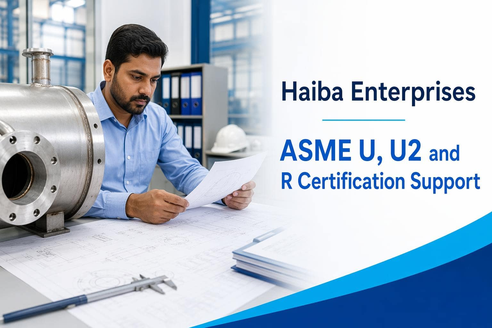

01
Assess
Understand the target certification, current capability, documentation, and evidence.
Certification Support
Haiba supports organizations preparing for ASME U, U2, and R certification activities with a coordinated, practical approach to technical and quality readiness.

Package scope
01
Understand the target certification, current capability, documentation, and evidence.
02
Connect the people, processes, records, and technical activities needed for readiness.
03
Work through identified gaps and create a clearer path toward assessment.
Share your target scope and current readiness with the Haiba team.
Talk to HaibaCertification readiness
ASME certification preparation requires coordinated technical documentation, quality processes, personnel responsibilities, and evidence that the organization can apply its system consistently.
Haiba provides practical support for teams preparing for certification activities, strengthening documentation, identifying readiness gaps, and coordinating the actions needed before a formal review.
01 | Assess
We review the intended certification scope, current processes, records, and available technical information.
02 | Strengthen
We help organize documents, clarify responsibilities, and improve the evidence needed for review.
03 | Prepare
We help the team prepare questions, actions, records, and follow-up for certification activities.
Certification readiness
ASME certification preparation requires coordinated technical documentation, quality processes, responsibilities, and evidence that the organization can apply its system consistently.
Haiba provides practical support for teams preparing for certification activities, strengthening documentation, identifying readiness gaps, and coordinating actions before formal review.
01 | Assess
Review the intended scope, current processes, records, and technical information.
02 | Strengthen
Organize documents, clarify responsibilities, and improve review evidence.
03 | Prepare
Prepare questions, actions, records, and follow-up for certification activities.